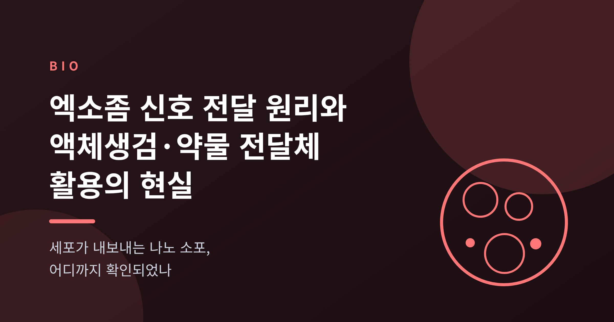
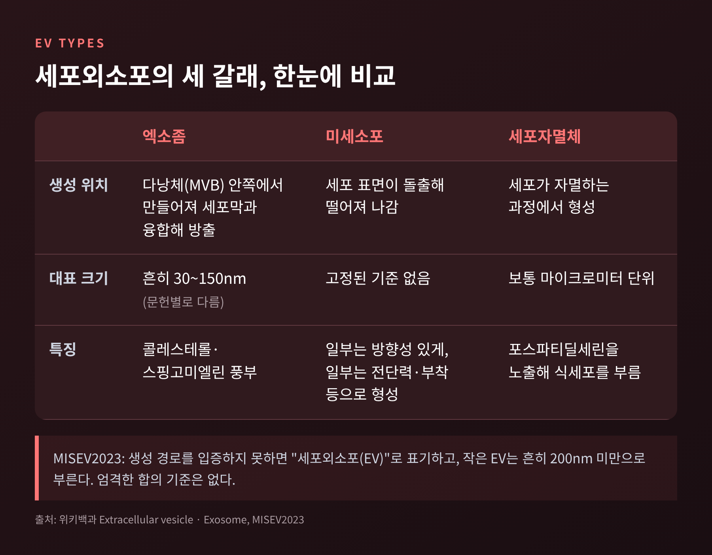
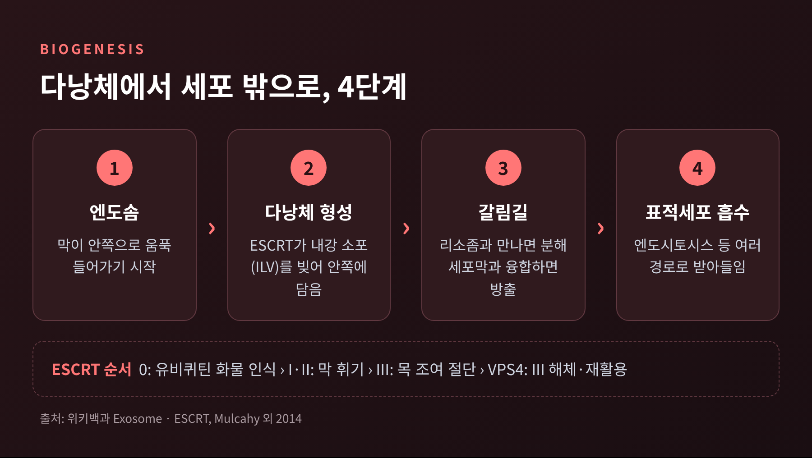
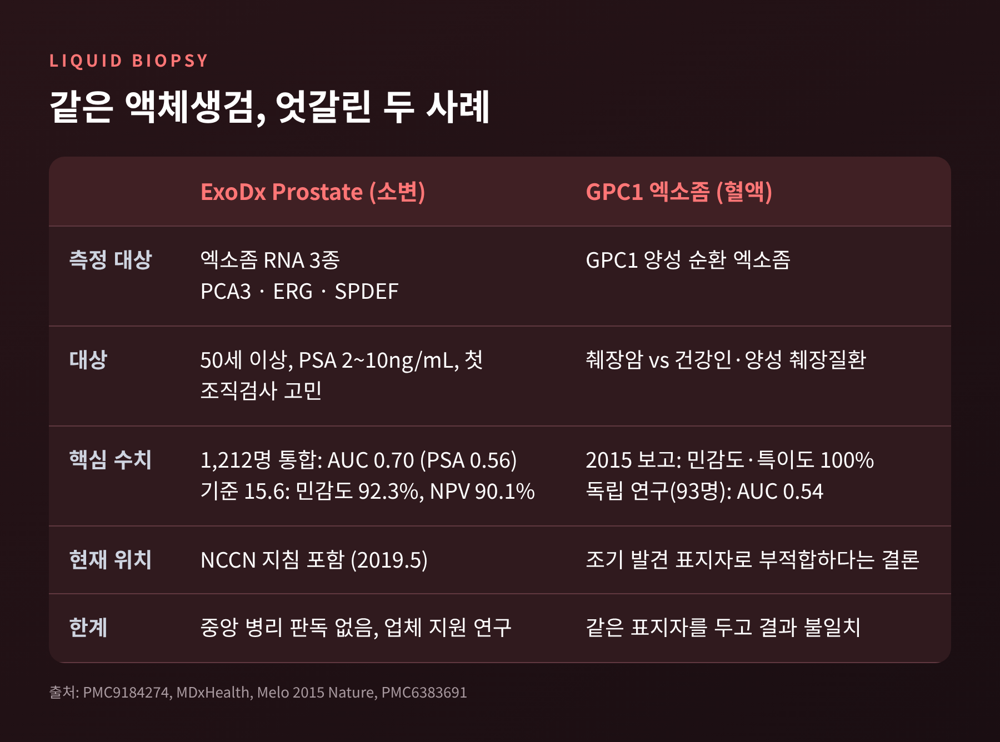
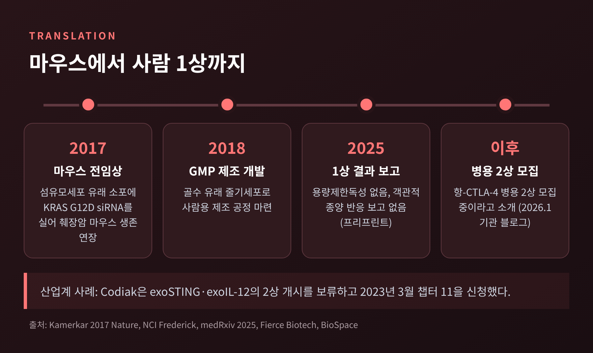
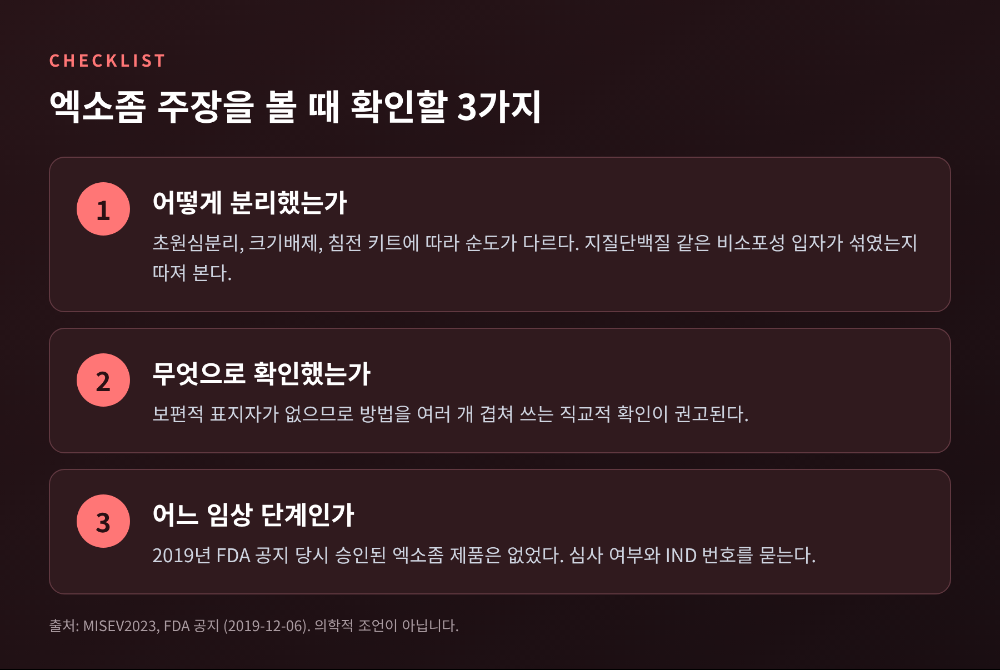

세포가 내보내는 나노 소포, 어디까지 확인되었나

이번 글에서는 엑소좀이 어떻게 만들어지고, 무엇을 싣고, 어디까지 진단과 치료에 쓰이는지 정리해 보겠습니다.
이 소포는 세포가 내보내는 30~150nm 크기의 작은 소포이며, 소변 속 RNA를 읽는 전립선암 검사처럼 일부는 이미 현장에 들어왔습니다.
다만 분리법과 용어가 아직 정리되지 않아, 기대와 확인된 사실 사이에 간격이 큽니다.
엑소좀은 대부분의 진핵세포가 내놓는, 지질 막으로 둘러싸인 나노 크기의 소포입니다.
혈액, 소변, 침, 뇌척수액에서 발견되며 크기는 보통 30~150nm로 소개됩니다.
처음 발견된 것은 1983년입니다.
Stahl 연구진과 Johnstone 연구진이 각각 성숙 중인 망상적혈구에서 관찰했고, 1987년에 "엑소좀"이라는 이름이 붙었습니다.
예전엔 적혈구가 성숙하며 막 단백질을 덜어내는 통로 정도로 이해되었습니다. 지금은 세포 사이에 RNA와 단백질을 실어 나르는 통신 수단으로 연구됩니다.
여기서 짚을 점이 있습니다.
국제세포외소포학회(ISEV)의 MISEV2023 지침은 생성 경로를 입증하지 못했다면 "엑소좀" 대신 "세포외소포(EV)"라고 부르라고 권합니다.
다낭체를 거쳐 나왔는지 확인하기 어렵고, 이 소포만 가려내는 보편적 표지자도 없기 때문입니다.
크기로는 작은 EV를 흔히 200nm 미만으로 부르지만, 엄격한 합의 기준은 없습니다.
이 글은 독자께서 흔히 찾으시는 이름을 그대로 쓰되, 이 한계를 전제로 읽어 주시길 권합니다.

세포 안에서는 엔도솜이라는 주머니가 물질을 분류합니다.
이 가운데 후기 엔도솜이 다낭체(MVB)입니다. 막이 안쪽으로 움푹 들어가 작은 소포 여러 개를 품은 모양입니다.
이렇게 안쪽에 만들어진 소포를 내강 소포(ILV)라 부릅니다.
갈림길은 그다음입니다.
다낭체가 리소좀과 만나면 내용물은 분해됩니다.
세포막과 융합하면 내강 소포가 바깥으로 풀려나며, 이것이 엑소좀입니다.
내강 소포를 빚는 대표 장치가 ESCRT입니다.
ESCRT-0가 유비퀴틴이 붙은 단백질을 알아보고 모으면, ESCRT-I과 II가 이를 이어받아 막을 안쪽으로 휘게 합니다.
이어 ESCRT-III가 소포 목을 조여 끊어내고, VPS4가 ESCRT-III를 해체해 재활용합니다.
ESCRT에 기대지 않는 길도 있습니다. syndecan–syntenin–ALIX 경로와 테트라스파닌, 지질 의존 경로가 그 예입니다.

적재물은 단백질, 지질, DNA, mRNA, miRNA 등 다양합니다.
무작위로 담기는 것이 아니라는 단서가 있습니다.
2013년 연구에서 hnRNPA2B1 단백질이 특정 염기서열 GGAG를 가진 miRNA를 알아보고 소포에 실어 보낸다는 결과가 나왔습니다. 이 결합에는 단백질의 SUMO화가 필요했습니다.
다만 선별 적재 기전 다수는 아직 제안 단계라는 것이 리뷰 저자들의 평가입니다.
전달 가능성을 처음 크게 보여준 것은 2007년 Valadi 연구진입니다.
쥐 비만세포가 내놓은 소포에서 약 1,300개 유전자의 mRNA가 검출되었고, 이 RNA를 받은 사람 세포에서 쥐 단백질이 새로 만들어졌습니다.
소포가 유전 정보를 건넬 수 있다는 첫 단서였습니다.
받는 쪽의 사정도 단순하지 않습니다.
표적세포는 주로 엔도시토시스, 즉 세포가 소포를 삼키는 방식으로 흡수하는 것으로 보이며, 여러 경로가 동시에 작동할 가능성이 큽니다.
소포 표면의 인테그린이 주소 역할을 한다는 보고도 있습니다. 2015년 Hoshino 연구에서는 인테그린 α6β4·α6β1이 폐 전이, αvβ5가 간 전이와 연관되었고, 이를 차단하자 흡수와 전이가 줄었습니다.
여기에는 단서를 달아야 합니다.
생체 내에서 miRNA가 실제로 전달되어 작동한다는 직접 증거는 얻기 어렵다고 연구자들 스스로 밝힙니다.
2019년 Cell 논문은 Argonaute 단백질이 이 소포에서 검출되지 않았다고 보고해, 기존 이해를 다시 점검해야 한다고 주장했습니다.
시험관에서는 가능성이 보이지만 몸속에서는 논쟁 중인 단계입니다.
이 소포가 진단 재료로 주목받는 이유는 분명합니다.
체액 속에서 비교적 안정적이고, 채혈이나 채뇨로 반복해서 얻을 수 있으며, 모세포의 정보를 담고 있기 때문입니다.
현장에 들어온 대표 사례가 ExoDx Prostate 검사입니다.
소변 속 소포의 RNA 세 가지(PCA3, ERG, SPDEF)로 고위험 전립선암 가능성을 점수화합니다.
대상은 PSA 수치가 2~10ng/mL인 50세 이상 남성 가운데 첫 조직검사를 고민하는 분입니다.
세 연구를 합친 1,212명 분석에서 곡선하면적(AUC)은 0.70으로, PSA 단독의 0.56보다 높았습니다.
기준점 15.6에서는 민감도 92.3%, 음성예측도 90.1%였고, 조직검사의 약 23%를 피할 수 있었습니다.
반대로 고위험 암을 놓쳐 진단이 늦어질 사람이 약 2.3% 있었습니다.
이 검사는 2019년 5월 미국 NCCN 전립선암 조기발견 지침에도 포함되었습니다.
한계도 분명합니다.
해당 연구는 중앙 병리 판독이 없었고 다수 기관이 MRI를 일상적으로 쓰지 않았으며, 검사 회사의 자금 지원을 받았습니다.
검사의 쓰임도 조직검사 여부를 가늠하는 보조 도구에 가깝습니다. 암 진단 자체를 대신하지는 않습니다.
반대 사례도 있습니다.
2015년 Nature 논문은 혈중 GPC1 양성 소포가 췌장암 환자를 민감도·특이도 100%로 가려낸다고 보고했습니다.
그러나 혈장 93명을 대상으로 한 독립 연구에서는 췌장암과 양성 췌장질환이 구분되지 않았습니다. AUC는 0.54였습니다.
같은 표지자를 두고 결과가 이만큼 엇갈렸습니다.

나노 소포를 약물 운반체로 쓰려는 발상은 자연스럽습니다.
몸이 만든 소포라 면역계의 감시를 덜 받고, 세포가 흡수하는 통로를 그대로 쓸 수 있기 때문입니다.
2017년 Nature 연구가 이정표로 꼽힙니다.
섬유모세포 유래 소포에 KRAS G12D 변이를 겨냥한 siRNA를 실어 췌장암 마우스에 투여했습니다.
소포 표면의 CD47이 "나를 먹지 말라"는 신호로 작동해 혈중에 더 오래 머물렀고, 같은 siRNA를 실은 리포솜보다 효과가 컸습니다.
KRAS 변이 세포는 매크로피노시토시스가 활발해 소포를 더 많이 삼킨다는 점도 확인되었습니다.
단, 마우스 연구였고 사람 자료는 없었습니다.
이후 중간엽줄기세포 유래 소포로 바꾼 1상 시험(iEXPLORE)이 진행되었습니다.
2025년 프리프린트에 따르면 용량제한독성이 없었고 최대내약용량에 이르지 못했습니다.
순환 DNA 속 변이 KRAS 감소와 종양 내 CD8 T세포 증가 같은 표적 반응 신호도 보고되었습니다.
반면 객관적 종양 반응은 보고되지 않았고, 일부 환자의 안정병변 뒤에 대부분 병이 진행되었습니다.
소수 환자 대상의 안전성 시험이며, 동료심사를 마친 결과인지는 확인하지 못했습니다.
병용 2상이 모집 중이라는 소개가 있으나, 결과를 논할 단계는 아닙니다.
산업계의 현실은 더 차갑습니다.
소포 공학 기업 Codiak은 exoSTING과 exoIL-12의 2상 개시를 보류했고, 2023년 3월 챕터 11에 들어갔습니다.
기술의 가능성과 사업의 지속 가능성은 별개의 문제임을 보여 줍니다.

가장 큰 병목은 분리입니다.
혈액에는 이 소포와 비슷한 크기의 지질단백질과 단백질 응집체가 함께 있습니다.
MISEV2023은 이런 비소포성 입자가 소포보다 훨씬 많을 수 있고 함께 분리되기 쉽다고 경고합니다.
초원심분리는 약 10만~20만 g에서 45~150분 돌려 작은 소포를 가라앉히지만 불순물이 섞일 수 있습니다.
크기배제크로마토그래피는 크기로 거르되 모든 유형의 소포가 함께 나옵니다.
상용 침전 키트는 부피를 줄이는 용도 외에는 권하지 않는다고 지침은 적고 있습니다.
그래서 연구마다 같은 이름 아래 다룬 대상이 조금씩 다를 수 있습니다.
2025년 리뷰도 표준화된 분리·특성 분석 프로토콜의 부재가 재현성을 해친다고 지적합니다.
2016년 이전에는 공분리 오염 가능성을 평가한 연구가 5%에도 못 미쳤다는 정리도 있습니다.
소비자가 마주치는 과장도 경계해야 합니다.
2019년 12월 미국 FDA는 승인된 제품이 없다고 밝혔습니다.
네브래스카에서 미승인 소포 제품을 맞은 환자들에게 심각한 이상반응이 보고된 직후의 공지입니다.
FDA는 치료 목적의 소포를 의약품이자 생물학적 제제로 보며, 환자에게 FDA 심사 여부와 임상시험계획(IND) 번호를 확인하라고 권했습니다.
이후의 최신 승인 상황은 이번 조사에서 확인하지 못했습니다.

정리하면 이렇습니다.
이 소포가 세포 사이 신호를 나르는 수단으로 연구된다는 점은 분명합니다.
한편 진단에서는 소변 RNA 검사 같은 일부 사례가 앞서 있고, 치료에서는 사람 대상 1상이 겨우 보고된 단계입니다.
분리법과 용어가 정리되기 전까지는 같은 이름 아래 서로 다른 것이 섞여 있다는 점을 기억해 두셔야 합니다.
"가능성은 넓고, 확인된 것은 아직 좁다."
이 글은 일반 정보를 정리한 것이며 의학적 조언이 아닙니다. 검사나 치료는 반드시 의료진과 상의해 결정하시기 바랍니다.
다음에 엑소좀을 내세운 소식을 접하신다면, 어떻게 분리했고 어느 단계까지 검증되었는지부터 확인해 보시길 권합니다.